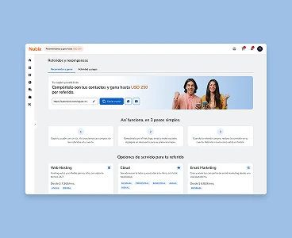

Nueva funcionalidad
Panel de clientes · 2 meses
Programa de referidos
Diseñé de punta a punta un programa de referidos para once países: un solo link para compartir, recompensa en dólares y un historial que muestra el estado de cada comisión durante la espera.